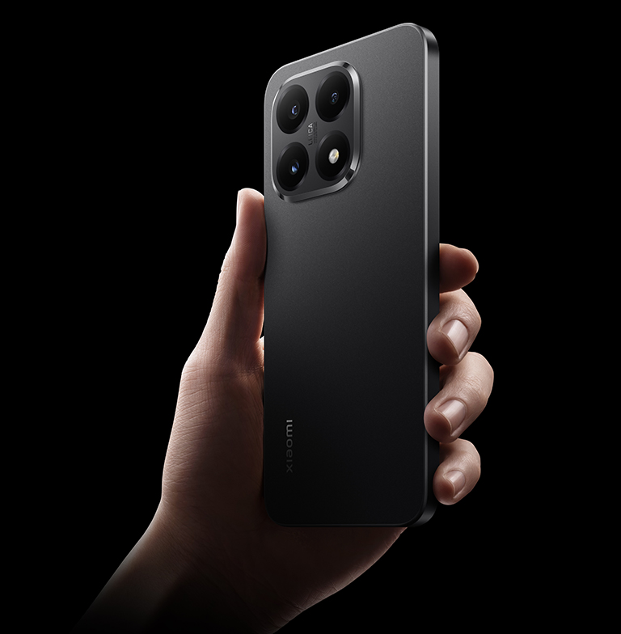
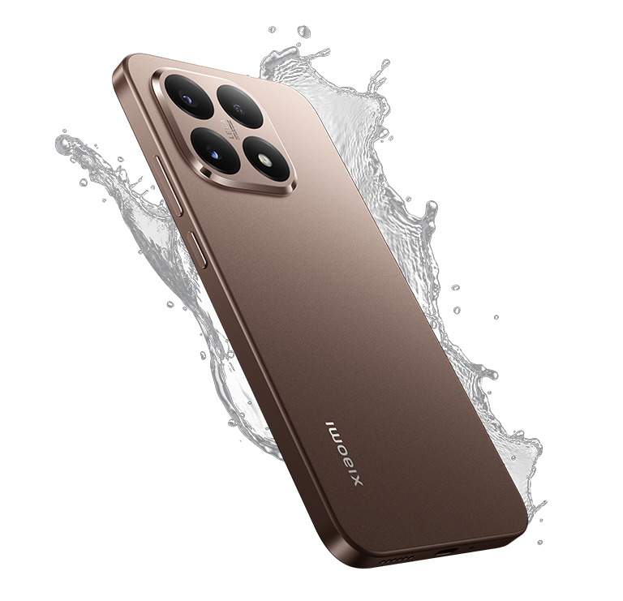
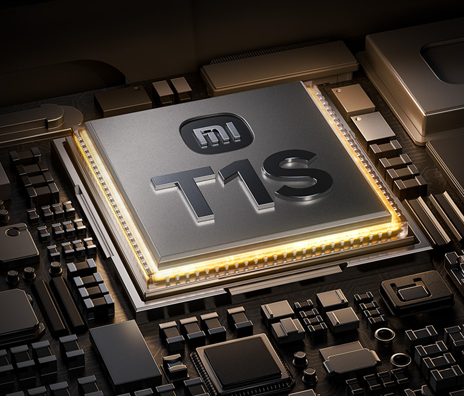
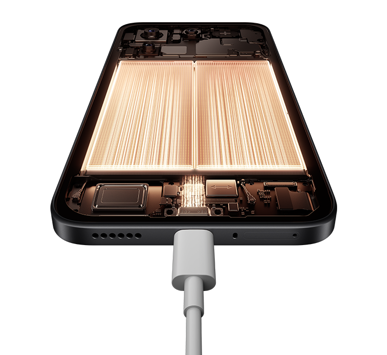
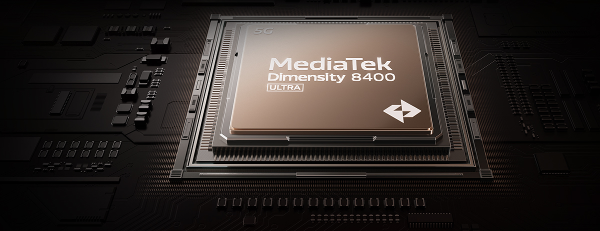

Телефон
Смартфон Xiaomi 15T відкриває еру суперможливостей серед мобільних пристроїв. Насолоджуйся надчітким, барвистим і плавним зображенням на 6.83-дюймовому дисплеї з частотою оновлення до 120 Гц. Потужний процесор MediaTeK Dimensity 8400 Ultra чудово поєднує високу продуктивність і низьке енергоспоживання. Передова система камер Leica дає можливість зберегти всі пам’ятні моменти в приголомшливій якості. Турбозарядка потужністю 67 Вт всього за кілька хвилин заряджає батарею на цілий день роботи.
Справжні фотошедеври з камерою Leica
З потрійною камерою Leica ти отримаєш справжній професійний інструмент, який дозволить тобі створювати приголомшливі фотографії та відео в будь-який час і в будь-якому місці. З її допомогою ти можеш легко зафіксувати будь-який ракурс, чи то захопливий пейзаж, чи портрет. А з оптичним об'єктивом Leica Summilux з його надвеликою апертурою та винятковими оптичними характеристиками тобі забезпечені приголомшливі кольори та чіткі захопливі деталі навіть при слабкому освітленні. Технологія Light Fusion 800 з високим динамічним діапазоном, що можна порівняти з професійними камерами, дає можливість точно передати насичені кольори, а також нюанси світла й тіні рухомих об'єктів.
.webp)
Краса в деталях
Xiaomi 15T поєднує в собі мінімалістичний витончений дизайн із преміальними матеріалами. Задня кришка плавно зливається з корпусом, створюючи гармонійне враження. Чисті лінії та плавні контури переплітаються, виражаючи стиль і витонченість. Витончений округлий корпус товщиною всього 7,5 мм має приголомшливий вигляд. М'які контури та матова обробка створюють збалансований та елегантний вигляд — смартфоном не лише комфортно користуватися, його приємно просто тримати.

Твоя впевненість у кожному дні
Із захистом рівня IP68 твій Xiaomi 15T стає по-справжньому невразливим. Технологія забезпечує повну водонепроникність і захист від пилу, дозволяючи йому витримувати занурення на глибину до 3 метрів. Неважливо, де ти перебуваєш — на пляжі, в поході або просто гуляєш під дощем, твій смартфон завжди буде в безпеці. Екран смартфона оснащений склом Corning Gorilla Glass 7i, яке забезпечує поліпшену стійкість до подряпин. Тепер тобі не потрібно турбуватися про дрібні пошкодження, які можуть виникнути в повсякденному житті.

Дисплей з частотою до 120 Гц
6.83-дюймовий дисплей з винятковою роздільною здатністю 1.5К, частотою оновлення 120 Гц і 12-бітною глибиною кольору відображає мільйони кольорів і відтінків, гарантуючи незабутні враження від перегляду контенту та ігор. Завдяки рекордній піковій яскравості 3200 ніт смартфоном зручно користуватися на вулиці вдень. Рамки з трьох сторін всього 1.5 мм забезпечують поліпшені відчуття як під час перегляду, так і при торканні.
.webp)
Екран, який дбає про тебе
Сучасні технології захисту зору вийшли на новий рівень. Частота ШІМ-диммінгу 3840 Гц практично усуває мерехтіння, знижуючи втому очей навіть при тривалому використанні. Автоматична яскравість з 16 000 рівнями підлаштовується під будь-яке освітлення — від яскравого дня до нічної тиші. Адаптивні кольори роблять зображення природним, а режим читання з циклічним налаштуванням перетворює екран на комфортну заміну паперової сторінки.
Зв’язок без перебоїв
Xiaomi 15T оснащений власним тюнером Xiaomi Surge T1S та антеною з розширеним діапазоном, розробленими для інтелектуальної оптимізації бездротових інтерфейсів. Рішення забезпечує стабільну роботу Wi-Fi, Bluetooth, GPS і мобільних мереж, адаптуючи параметри підключення в реальному часі. Тюнер аналізує умови середовища й автоматично регулює сигнали, знижуючи затримки та підвищуючи точність передачі даних. Це дозволяє пристрою підтримувати надійний зв'язок навіть у складних умовах, забезпечуючи користувачеві більш плавну взаємодію з сервісами та застосунками.

Цілий день роботи, 50 хвилин на підзарядку
Потужна акумуляторна батарея ємністю 5500 мА·год та інтелектуальна технологія управління зарядом Xiaomi Surge забезпечують багато годин автономної роботи. Дротова зарядка HyperCharge з неймовірною потужністю 67 Вт здатна всього за 50 хвилин зарядити батарею до 100%.

Блискавична робота
Високопродуктивна мобільна платформа на основі MediaTeK Dimensity 8400 Ultra гарантує чітке і плавне виконання будь-яких завдань. Завдяки поліпшеній продуктивності смартфон може більше, а збільшена енергоефективність дозволяє забути про часті підзарядки. Xiaomi 15Т підтримує одночасно відкритими десятки застосунків, чітко відтворює відео у високій роздільній здатності, дозволяє грати на високих налаштуваннях і редагувати фото та відео, і при цьому працює цілий день без дефіциту заряду.
